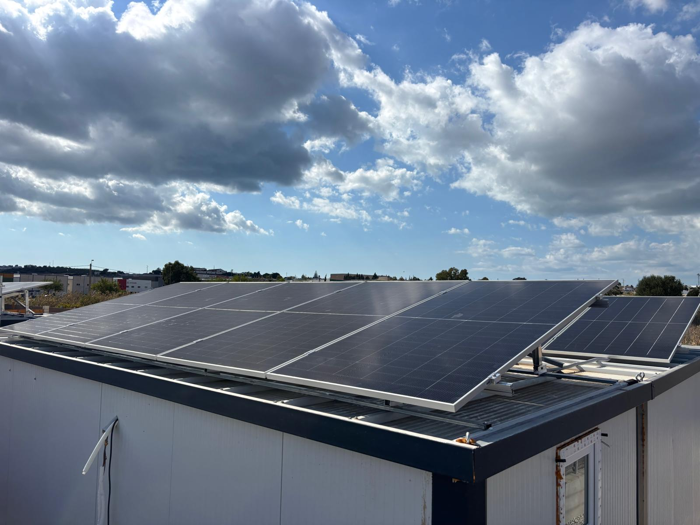
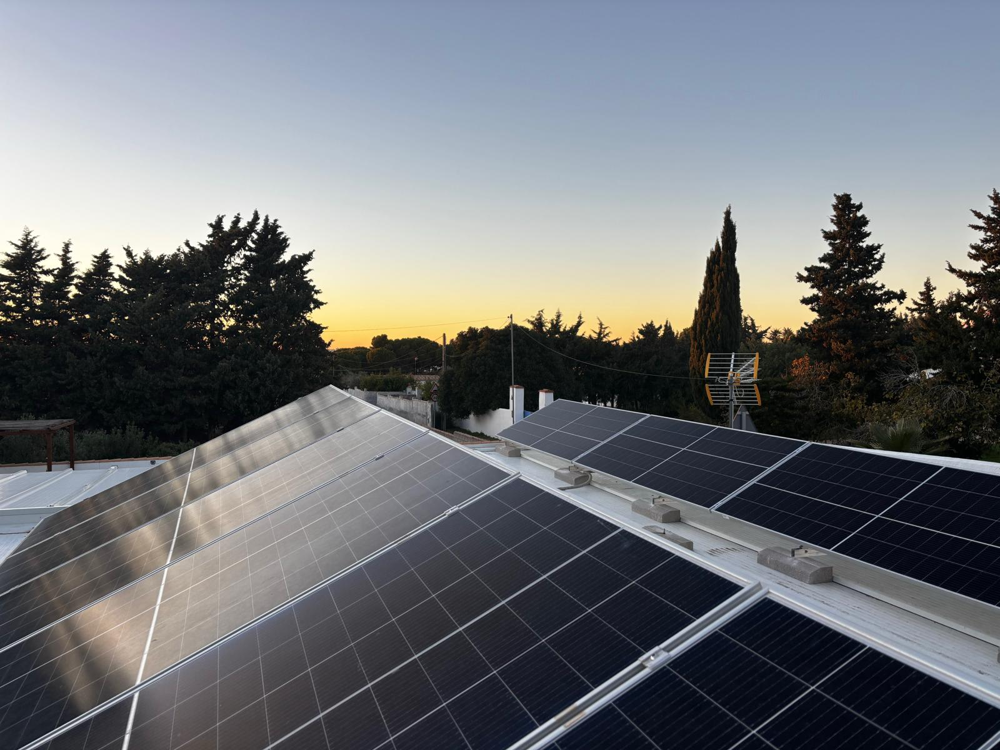
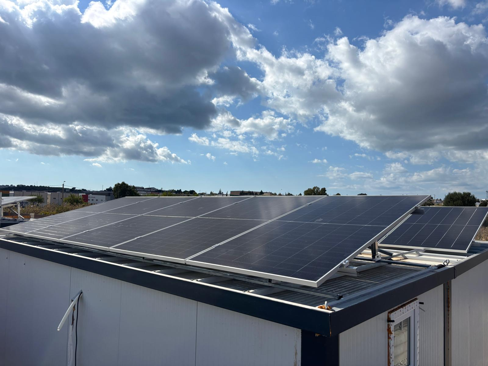
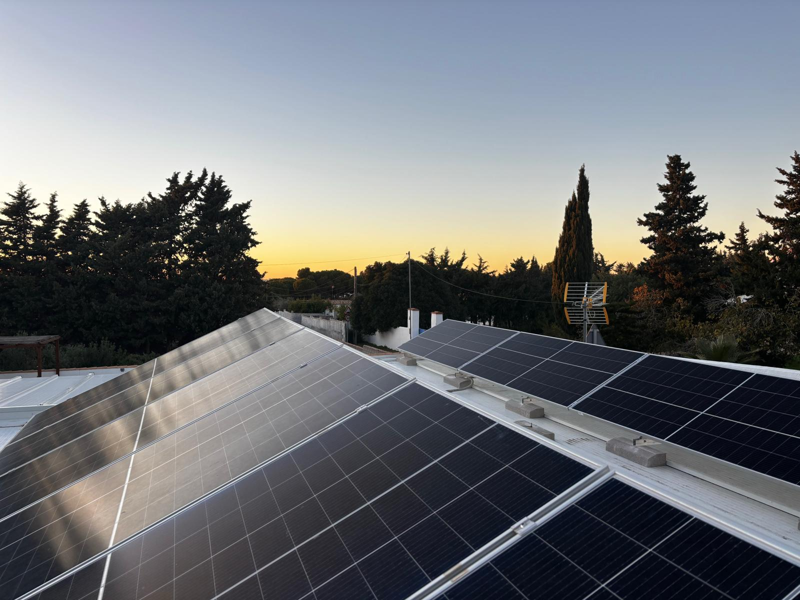

AUTOCONSUMO
Diseñamos e instalamos sistemas de autoconsumo fotovoltaico conectados a red, permitiendo producir tu propia energía eléctrica mediante placas solares. La energía generada se consume directamente en la vivienda o negocio, reduciendo el consumo de la red eléctrica y el importe de la factura.
En instalaciones con excedentes, la energía sobrante puede ser vertida a la red para su compensación económica, o bien almacenada en baterías para aumentar la autosuficiencia energética.
- Estudio técnico personalizado según consumo
- Instalación de placas solares y estructura
- Inversor, protecciones y cuadro eléctrico
- Monitorización y puesta en marcha
- Legalización y soporte técnico
 


